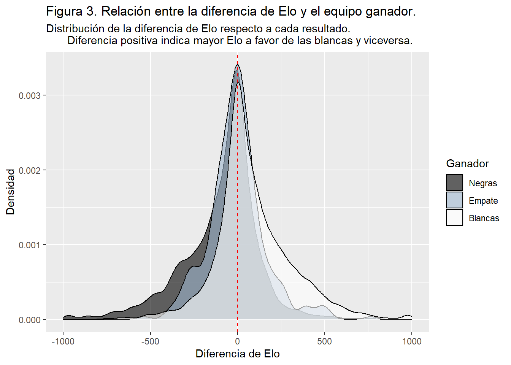

Análisis de Partidas de Ajedrez
Introducción
El ajedrez moderno es un juego de mesa, el cual, desde su origen oriental, terminó de asentarse completamente a inicios del siglo XVI en el continente europeo. Desde esa época hasta el día de hoy, se ha convertido en un deporte reconocido mundialmente en el que se han realizado una inmensa cantidad de competiciones.
Una partida de ajedrez se disputa entre dos jugadores, uno contra uno; cada uno posee 16 piezas, cada una con su propia particularidad, siendo las de un jugador de color claro, llamadas blancas, y las de su oponente de color oscuro, llamadas negras. Las piezas se mueven sobre un tablero de ajedrez cuadrado de 64 casillas. El ajedrez no es un juego de azar, sino un juego racional y de estrategia, ya que cada jugador decidirá el movimiento de sus piezas en cada turno. Comienza a jugar quien lleve las blancas, lo que le concede una ventaja pequeña pero esencial en los niveles altos de competición.
En la siguiente imagen se da una representación visual de lo descrito al inicio del párrafo anterior:

Hoy en día existen páginas y plataformas en línea para practicar, disfrutar y competir en este aclamado juego de estrategia.
Existen determinados factores que pueden afectar o predecir que un jugador gane a otro, ya sea el color de sus piezas, el Elo de los jugadores (correspondiente al nivel competitivo que presenta un jugador), la cantidad de turnos que dura una partida, el tipo de partida, entre otros.
¿Es este juego realmente equilibrado o se encuentra sesgado en favor de uno de los bandos?, es decir, ¿uno de los jugadores siempre presentará una ventaja por sobre su oponente? ¿Influye el color del equipo en una partida de larga duración? ¿Es el Elo un sistema eficaz para medir el nivel de competencia de un jugador? ¿Influye el Elo de los jugadores en algunos resultados de la partida?
Resulta relevante responder a estas preguntas, con motivo de estimar cuán equilibrado realmente se encuentra este deporte y su sistema de emperajemientos , si existe tendencia a un resultado debido a un factor específico y cómo varían las partidas dependiendo del nivel de los jugadores, ya que en partidas se enfrenta a jugadores de un nivel competitivo similar.
Con objetivo de aclarar estas incógnitas, en este proyecto realizaremos una exploración de los datos de distintas partidas de ajedrez, recabadas en la plataforma en línea “Lichess”, la cual es una plataforma en la que se disputan partidas y torneos de ajedrez diariamente. Analizaremos algunos de los factores que podrían influenciar en la victoria de un jugador por sobre otro y estimar qué tan equilibrado se encuentra este deporte.
Este trabajo se encuentra dividido en tres secciones: En la primera sección presentaremos y describiremos los datos y variables que serán utilizadas y los métodos que aplicaremos para su análisis. En la segunda sección, mostraremos los resultados obtenidos, organizados en base a las variables de interés. Para finalizar, en la tercera sección, presentaremos las conclusiones acerca de las variables que fueron llevadas al análisis y su influencia en el resultado de una partida.
Presentación de los datos.
Dentro de esta sección, daremos a conocer las variables que utilizaremos, además de los métodos que aplicaremos para su análisis.
En la siguiente tabla, se presentan las distintas variables de la base de datos, su tipo y una descripción para entender mejor cómo funciona esta.
| Base de datos de Partidas de ajedrez en línea | ||
| Provenientes de la plataforma Lichess | ||
| Variable | Tipo | Descripción |
|---|---|---|
| Turnos | Cuantitativa discreta | Corresponde a la cantidad de turnos que duró la partida. |
| Estado de victoria | Cualitativa nominal | Corresponde al resultado de la partida, independientemente del ganador. Puede ser empate, rendición, falta de tiempo o jaque mate. |
| Ganador | Cualitativa nominal | Corresponde al equipo ganador de la partida. En caso de haber un empate, no existe ganador. |
| Rango Blanco | Cuantitativa discreta | Puntos de clasificación Elo del contrincante del equipo blanco. Representa el nivel competitivo del jugador. |
| Rango Negro | Cuantitativa discreta | Puntos de clasificación Elo del contrincante del equipo negro. Representa el nivel competitivo del jugador. |
| Diferencia de rangos | Cuantitativa discreta | Diferencia de Elo entre el jugador blanco y negro. Si su valor es positivo, indica que el jugador del equipo blanco tiene mayor Elo, y viceversa. |
| Fuente: Kaggle.com | ||
Para el caso de los métodos que utilizaremos, nos basaremos principalmente en el uso de gráficos que representen la relación entre las distintas variables, con objetivo de responder a las preguntas hechas en el apartado de la introducción:
-Determinar si es el Elo un sistema eficaz para medir el nivel de competencia de un jugador y la efectividad del emparejamiento.
-Conocer si Influye la diferencia de Elo de los jugadores en el ganador de la partida.
-Determinar si este juego es realmente equilibrado o se encuentra sesgado en favor de uno de los bandos.
-Saber si Influye el color del equipo en una partida de larga duración

